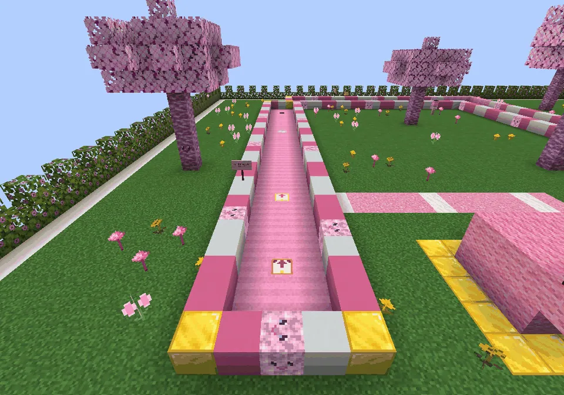
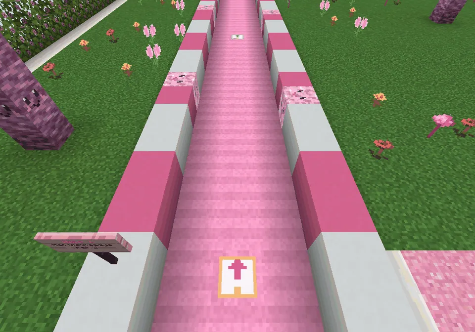
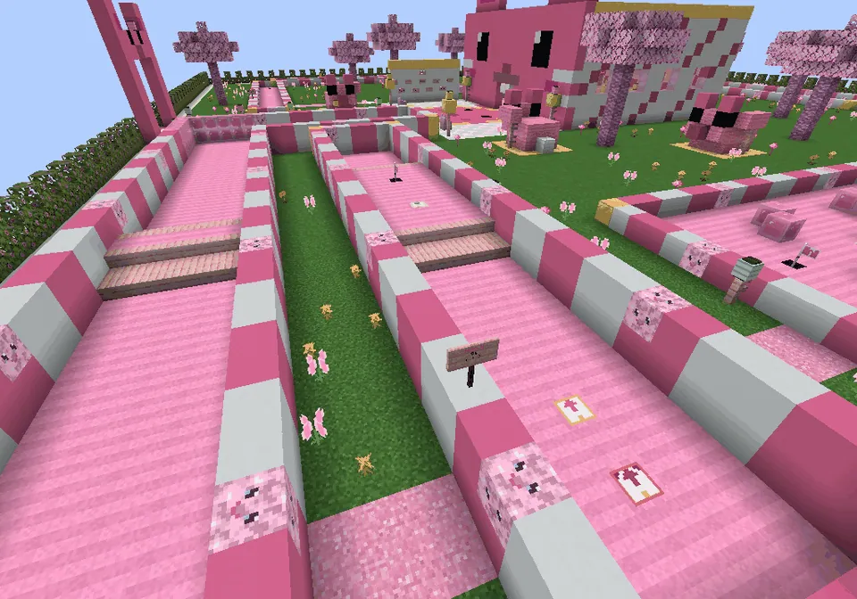
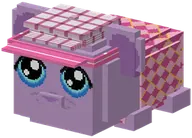

Nine holes of mini golf with three tees per hole.
Negen holes minigolf met drie afslagmatjes per hole.
Guhgolf
The Guh Golf Course is a rare minigame in the Guhmension (about 96 blocks across). The Golfguh lives in the clubhouse with the guh face. She lends you a club for a round of 9 holes, with at most 8 strokes per hole. Hold right-click near your ball to charge the power bar: the longer you hold, the harder you hit, up to 100%. The ball goes the way you look, and you let go to hit. Kaassaus or going off the course costs a penalty stroke. Watch out for the windmill, the Vahoegschans and the Kaasknabbelheuvel! Every hole has three tees: green for makkelijk, pink for medium and red for lastig (see ). The fewer strokes you take, the more golfballetjes you get. You spend them in her shop on the golf outfit (flat cap, sun visor and argyle sweater). After every round your personal best shows up in chat. The top 3 of the whole world floats above the Golfguh.
De Guhgolfbaan is een zeldzame minigame in de Guhmension (zo'n 96 blokken breed). In het clubhuis met het guhgezicht woont de Golfguh. Zij leent je een club voor een rondje van 9 holes, met maximaal 8 slagen per hole. Houd rechtsklik ingedrukt bij je bal om de krachtbalk op te laden: hoe langer je vasthoudt, hoe harder je slaat, tot 100%. De bal gaat de kant op waar je kijkt, en je laat los om te slaan. Kaassaus of buiten de baan kost een strafslag. Pas op voor de guhmolen, de Vahoegschans en de Kaasknabbelheuvel! Heeft elke hole drie afslagen: groen voor makkelijk, roze voor medium en rood voor lastig (zie ). Hoe minder slagen, hoe meer golfballetjes. Die geef je in haar winkeltje uit aan het golfpakje (vadsige golfpet, guhzonneklep en ruitjesvadstrui). Na elk rondje zie je je persoonlijke record in de chat. De top 3 van de hele wereld zweeft boven de Golfguh. VAHOEG!



Makkelijk, medium and lastig teesAfslagen voor makkelijk, medium en lastig
| LevelNiveau | TeeAfslag | ParPar | ExtraExtra |
|---|---|---|---|
| MakkelijkMakkelijk | green mat with an arrow and a heart, close to the cupgroene mat met een pijl en een hartje, dicht bij de hole | 18 (2 × 9) | no penalty strokesgeen strafslagen |
| MediumMedium | pink mat, the old teeroze mat, de oude afslag | 27 | as beforezoals altijd |
| LastigLastig | red mat with Mika horns, further back and behind obstaclesrode mat met Mika-hoorntjes, verder weg en achter obstakels | 36 | the windmill turns twice as fast and 28 extra pink slime bumpers appear for the roundde molen draait twee keer zo snel en er komen 28 extra roze slijmbumpers voor die ronde |
The wind is gone. Every level has its own par on the card and the boards. Golf courses that were already generated keep only the medium tees (every level then uses those and medium par); new courses get all three.
De wind is weg. Elk niveau heeft een eigen par op de kaart en de borden. Golfbanen die al gemaakt waren houden alleen de medium-afslagen (elk niveau gebruikt die dan, met medium-par); nieuwe banen krijgen ze alle drie.
Guhgolf: three tees per holeGuhgolf: drie afslagen per hole
The courseDe baan
The golf course from above, with all 27 tees.De golfbaan van bovenaf, met alle 27 afslagen.

The makkelijk matDe makkelijk-mat
Green, with an arrow and a heart.Groen, met een pijl en een hartje.

Holes 8 and 9Holes 8 en 9
Red lastig tees behind the obstacles.Rode lastig-afslagen achter de obstakels.
Prizes: clothesPrijzen: kleding
- Vadsige golfpet 10 golfballetjes
 Guhzonneklep 8 golfballetjes
Guhzonneklep 8 golfballetjes Ruitjesvadstrui 16 golfballetjes
Ruitjesvadstrui 16 golfballetjes
Highscores in the GuhdexHighscores in de Guhdex
- Makkelijk
- Medium
- Lastig
At a glanceIn het kort
- MakkelijkMakkelijk
- 10 strokes a hole, no penalty stroke10 slagen per hole, geen strafslag
- MediumMedium
- 8 strokes, penalty strokes8 slagen, strafslagen
- LastigLastig
- 6 strokes; its own tees further back, par 36, a windmill twice as fast and extra slime bumpers (the wind is gone)6 slagen; eigen afslagen verder weg, par 36, een molen die twee keer zo snel draait en extra slijmbumpers (de wind is weg)
- Pays inBetaalt in
 golfballetjes
golfballetjes- Per gamePer potje
- Per hole: hole in one 6, eagle 5, birdie 4, par 3, bogey 2, worse 1 (8 strokes and not in: 0). After the round +3, +4 more at par or better, +3 more for a new record.Per hole: hole-in-one 6, eagle 5, birdie 4, par 3, bogey 2, slechter 1 (8 slagen en nog niet in de hole: 0). Na het rondje +3, nog +4 bij par of beter, nog +3 voor een nieuw record.
- First time everDe allereerste keer
- +6, 16 kaasknabbels, 4 fried kaasknabbels+6, 16 kaasknabbels, 4 gefrituurde kaasknabbels
See alsoZie ook
 GuhgolfbaanStructuresBouwwerken
GuhgolfbaanStructuresBouwwerken GolfguhCharactersPersonages
GolfguhCharactersPersonages
Clothing set: De guhgolfbaanKledingset: De guhgolfbaanClothesKleding